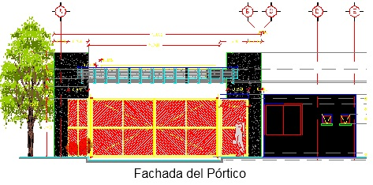

PROYECTOS
QADROS ingenieros está conformado por un equipo de profesionales apasionados por las estructuras, un nivel técnico altamente calificado y gusto por la innovación. La utilización de herramientas y software de vanguardia ha permitido incursionar en la elaboración de distintos tipos de proyectos ejecutivos, debido a que el personal se encuentra en constante capacitación, que garantiza la calidad de los proyectos ejecutivos en todas sus etapas (criterios de proyecto estructural, planos estructurales y procesos constructivos) para hacer de cada proyecto ejecutivo un éxito.
- Edificios
Articulo 123, consiste en una edificación a base marcos de acero acompañados de muros estructurales de concreto reforzado, un sistema de piso de losa-acero, además de un cajón de cimentación acompañado de un sistema de pilotes de concreto reforzado.
|
Vivienda Económica, estructurado por marcos de concreto reforzado y muros de concreto estructurales, un sistema de piso de losa plana, el sistema de cimentación consta de una losa plana con contra-trabes de concreto reforzado.
|
Oficinas Corporativas, estructurado a base de marcos de acero,sistema de piso (Lamina multi-panel) y un sistema de cimentación a base de zapatas aisladas de concreto reforzado.
|
Edificio Eléctrico, estructurado a base de marcos de Acero (contra-venteados), sistema de piso de losa de concreto armado, un cajón de cimentación a base de marcos y muros de concreto armado.
|
Nave Industrial, Revisión de los elementos estructurales de Acero.
|
Diseño de Pórtico, estructurado a base de marco de acero, columnas metálicas (OR) y Trabe metálica de sección constante IR, sistema de cimentación a base de zapatas aisladas y Contra-trabe de concreto reforzado, sistemas de techo de Lámina multi-panel.

|
- Cubiertas y Techumbres
Cubierta Polanco estructurado a base de marcos de acero, cubierta de cristal, sistema de cimentación a base de zapatas aisladas.
|
Techumbre para alberca, estructurado a base de marcos de acero, cubierta de cristal, sistema de cimentación a base de zapatas aisladas.
|
- Infraestructura
Puente Vehicular, estructurado a base de estribos de mampostería, un sistema de piso conformado de una losa sobre puesta en vigas AASHTO, un sistema de corona de concreto reforzado, así como muros de concreto reforzado y aleros de concreto reforzado.
|
Diseño de obras de drenaje para carreteras.
|
INICIO
SERVICIOS
PROYECTOS
CONTACTO
Copyright 2016. Mandanos un mensaje via email a :qadros.ingenieros@gmail.com
QADROS Ingenieros @ 2016. Derechos Reservados QADROS Ingenieros. Políticas de Privacidad.
|